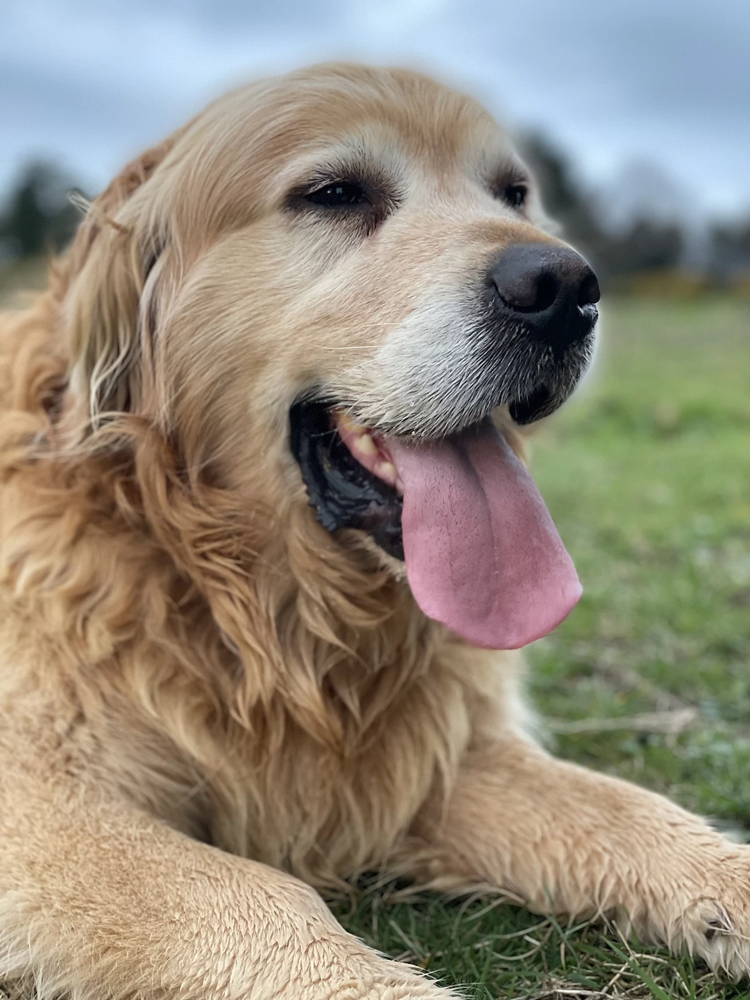
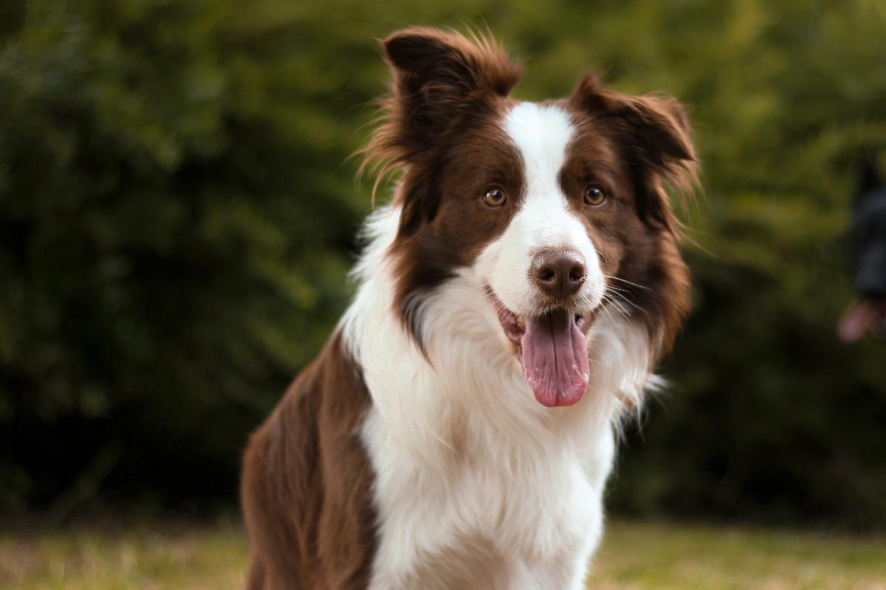
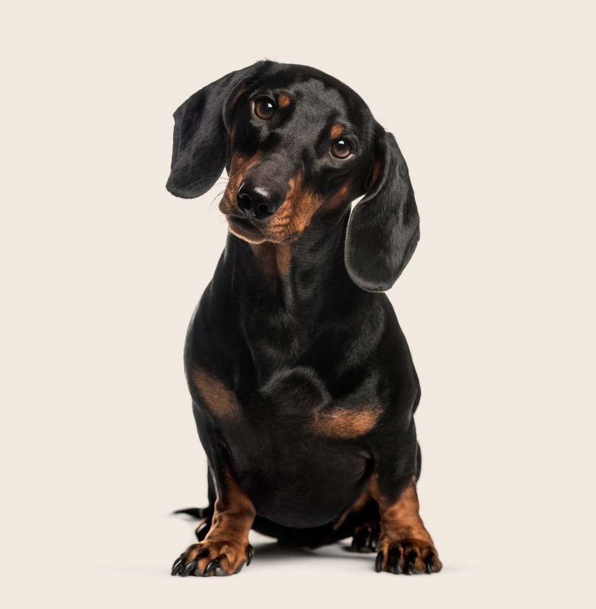

Mis perros:
Raza 1: Golden Retriever
El Golden Retriever es una raza amigable e inteligente conocida por su hermoso pelaje dorado. Son gentiles, obedientes y excelentes con las familias. Los Golden Retrievers son excelentes tanto como mascotas familiares como perros de trabajo. A menudo se utilizan en misiones de búsqueda y rescate debido a sus fuertes habilidades para nadar y su agudo sentido del olfato.
Raza 2: Border Collie
El Border Collie es una raza altamente inteligente y ágil. Sobresalen en obediencia y deportes caninos gracias a sus notables habilidades para el pastoreo. Los Border Collies son enérgicos y prosperan con la estimulación física y mental. A menudo se utilizan para pastorear ganado y como perros de agilidad competitiva.
Raza 3: Dachshund
El Dachshund, también conocido como el "Perro Salchicha," es una raza pequeña con cuerpo largo y patas cortas. Son conocidos por sus personalidades juguetonas y aventureras. Originalmente fueron criados para la caza y tienen un fuerte instinto de presa. A pesar de su tamaño, son confiados y hacen compañeros leales.